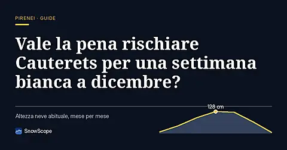
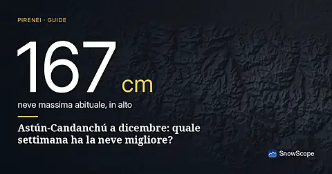
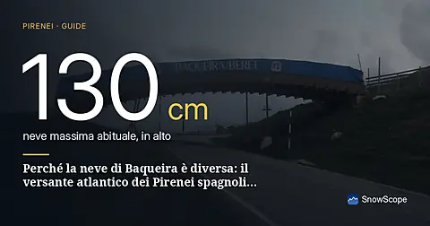

Bollettini neve · Pirenei
Bollettini neve quotidiani per sciatori: dove c'è neve, cosa arriva e dove sciare, dalla mappa neve di SnowScope e dalle stazioni di misura. Ogni numero viene dai dati del giorno.
La neve per paese oggi
I paesi più bianchi oggi: Francia (14 %), Andorra (5 %) e Spain (0 %).
Più neve fresca nella settimana: Francia (92 cm), Andorra (26 cm) e Spain (21 cm).
La neve oggi nelle grandi stazioni
- Piau-Engaly · 41 cm
- Gourette · 25 cm
- Grand Tourmalet · 21 cm
- Luz-Ardiden · 16 cm
- Formigal · 15 cm
- Candanchu · 13 cm
- Gavarnie-Gèdre · 13 cm
- Astun · 11 cm
- Ordino-Arcalis · 10 cm
- La Pierre Saint-Martin · 9 cm
- Saint-Lary · 9 cm
- Aramón Cerler · 8 cm
- Estació d'Esquí Baqueira-Beret · 7 cm
- Boí Taüll · 5 cm
- Canaro · 5 cm
- GrandValira · 5 cm
- Pal-Arinsal · 5 cm
- Ax 3 Domaines · 4 cm
- Les Angles · 4 cm
- La Molina · 3 cm
- Masella · 3 cm
- Peyragudes · 1 cm
- Estació d'esquí de Port-Ainé
- Estació d'esquí Port del Comte


Boí Taüll parte da 2039 m e batte Baqueira Beret sul prezzo dello skipass, anche se la neve di inizio dicembre richiede un po' di pazienza.

Cauterets offre 25 km di piste per 46 EUR, ma la nostra storia della neve mostra che la migliore possibilità di trovare copertura è l'ultima settimana di dicembre.

Confronta Grandvalira e le stazioni spagnole a dicembre 2026 per profondità della neve, altitudine degli impianti e prezzi a partire da 49,00 EUR.

Per una settimana bianca in famiglia a basso costo a dicembre ad Astún-Candanchú, punta a fine dicembre, quando le piste in quota hanno buona neve nel 67 % degli inverni passati.

Stai pianificando un viaggio a dicembre a Baqueira Beret? Guarda la nostra cronologia della neve, i prezzi dei biglietti a partire da 70,00 € per un pass giornaliero e come si confronta con Astún-Candanchú.


Andorra non ha un grande aeroporto: come raggiungere Grandvalira da Barcellona o Tolosa, il tunnel dell'Envalira, la CG2 e i parcheggi.

Gourette e Cauterets a confronto: quote, neve abituale per mese, settimane migliori e come arrivare, da 46 inverni passati.

Baqueira-Beret è nella Val d'Aran, sul versante atlantico dei Pirenei. Che cosa significa per la sua neve, verificato su 46 inverni passati contro La Molina, e quando andare.

Meno giorni di neve in tutti i 120 punti studiati sui Pirenei dal 1980-81, soprattutto sotto 1.500 m: la nostra serie di 46 inverni e la ricerca.

Come vivere una buona giornata a Luz-Ardiden, piccolo comprensorio sopra Luz-Saint-Sauveur negli Alti Pirenei: la strada, i due settori, la neve di 46 inverni passati e le settimane da scegliere.